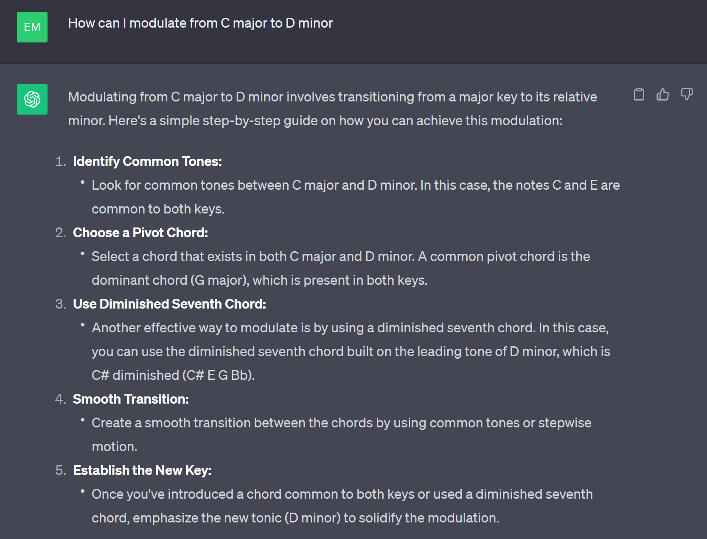
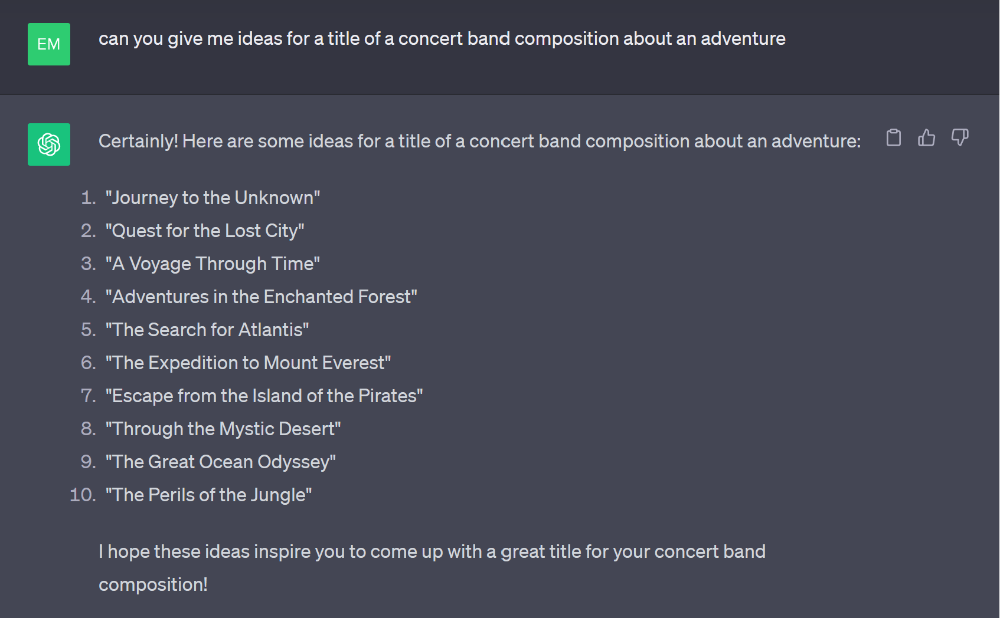

The use of AI in composition
With the rise of more and more AI technologies, undoubtfully, there must be some applications of AI to composition. In fact, one of the coolest examples of AI applied to classical music is the "completion" of Beethoven's 10'th symphony. Beethoven had never finished writing a 10th symphony, but some sketches have been found, so in 2021, a group of AI reserachers and composers got together and created an AI that would write two movements of this potential symphony based on his sketches and by training it on Beethoven's previous works so that it can compose in Beethoven's style. You can hear what the third movement sounds like here, or if you have some spare time, you can listen to the entire result here. There are many diverging opinions on this, but I personally think the third movement sounds absolutely amazing and very Beethoven-esque. It is very obvious that the AI was trained on Beethoven's works because the main theme replicates his famous 5th symphony opening. I found the fourth movement a bit more strange as it combined several motifs but without any sort of coherence. Some (add the source) argue that the entire product is underwhelming and doesn't represent Beethoven's character, but nevertheless, it is fascinating how the AI was able to create even something that sounds nice, let alone combine some of Beethoven's key musical features.
Can ChatGPT compose?
Now for fun, I asked ChatGPT to just create me a song for violin and cello to test it creative abilities.
This is what it came up with (written on piano staff where the violin part is on top and cello on the bottom):
First, the song doesn't respect my requirements - the only thing it did right was give me a violin and cello part and it tried
to stay in E minor by starting with an E. Then if you notice carefully, it repeats the same two measures over and over again, and
all measures except the first one have the same notes for both instruments. It's as if ChatGPT got stuck in a loop and has writer's block.
Moral of the story: if you want to use AI to help get out of writer's block, DON'T use ChatGPT. I think that ChatGPT can instead be used for smaller scale ideas when you are stuck on something since composing an entire composition is quite the task for a general AI that doesn't specialize in music. Some examples:
- How to create some transitions: ChatGPT is good at giving step-by-step instructions. 
- Finding a title: this is a real-life example from this summer!


- Misc: according to ChatGPT, it can help with these things as well.

Other AI composition tools
Now, if you really wanted to use AI to help you in your baroque compositions, there is this neat little online doodle you can try which uses AI to harmonize a melody in 4 parts in Bach's style. It apparently was trained on Bach's pieces to learn harmonization patterns, and Bach is known to have very complex harmonizations with up to 6 parts! (insert source here). This interactive app actually sparked an idea this summer which was for me to write a melody for an entire piece, and let the AI do the rest of the work by harmonizing it and seeing how it sounds (and now this course motivated me to finally finish it!). This is how it sounds:
Of course, this AI has a few limitations: it uses Bachs' style specifically, it has only a certain rhythm flexibility, and it can only write 2 measures at a time. With these limitations, the piece above doesn't sound as coherent as I wanted, so I modified it slightly so adjust it to make it a bit more playable and coherent with my initial ideas. However, a lot of times, this little AI was pretty good at giving me some nice harmonization ideas!
AIs like this that are specifically made to work with music (unlike chatGPT) can thus be used in tandem with our own creativity so that the AI builds off of my ideas and I build off of the AIs ideas. However, of course there are many problems that AI brings, especially to artistic industries such as music regarding whether work using AI is really your own work, which is addressed more in detail in this section.